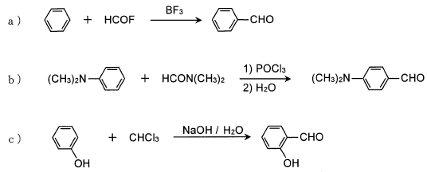

平成26年度 問6 有機化学及び燃料
芳香族アルデヒドは合成的に重要な中間体になり得ることから、芳香族化合物のホルミル化反応については多くの例が報告されている。その中で、以下の a) ～ c) に例を示した3つの反応の名称の組合せとして、最も適切なものはどれか。

| 選択肢 | a | b | b | |
|---|---|---|---|---|
|
①
|
Wittig反応 | Vilsmeyer反応 | Reimer-Tiemann反応 | |
|
②
|
Wittig反応 | Reimer-Tiemann反応 | Vilsmeyer反応 | |
|
③
|
Friedel-Craftsアシル化反応 | Wittig反応 | Vilsmeyer反応 | |
|
④
|
Friedel-Craftsアシル化反応 | Vilsmeyer反応 | Reimer-Tiemann反応 | |
|
⑤
|
Friedel-Craftsアシル化反応 | Reimer-Tiemann反応 | Vilsmeyer反応 | |
正答
④ a：Friedel-Craftsアシル化反応、b：Vilsmeyer反応、b：Reimer-Tiemann反応
Wittig反応は、カルボニル化合物からアルケンを合成する反応です。リンイリドとカルボニル化合物が反応し、C=C二重結合が形成されます。
Friedel-Craftsアシル化反応は、芳香族化合物にアシル基を導入する反応です。ルイス酸触媒の存在下で、アシル化剤が芳香環に求電子置換反応を起こします。a)の反応ではハロゲンとしてフッ素が用いられています。またルイス酸触媒として三フッ化ホウ素が用いられています。代表的なルイス酸触媒として塩化アルミニウムが挙げられますが、ホウ素はアルミニウムと同族の元素です。
Vilsmeyer反応は、芳香族化合物にホルミル基（-CHO）を導入する反応です。DMF（ジメチルホルムアミド）とPOCl3から生成するイミニウム塩が求電子剤として働きます。
Reimer-Tiemann反応は、クロロホルムとアルカリを用いてフェノール誘導体にホルミル基を導入する反応です。主にオルト位に反応が起こり、サリチルアルデヒド誘導体が生成します。